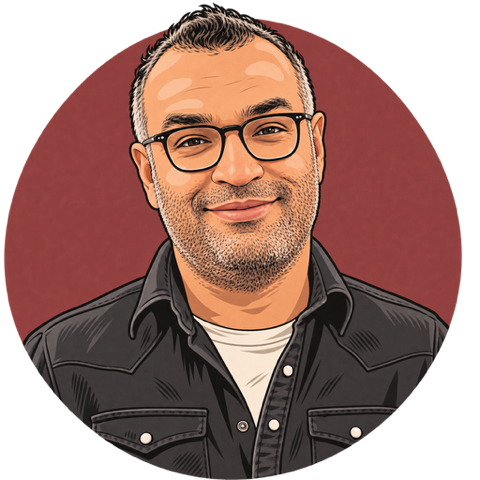
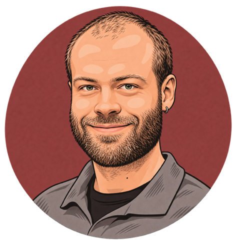
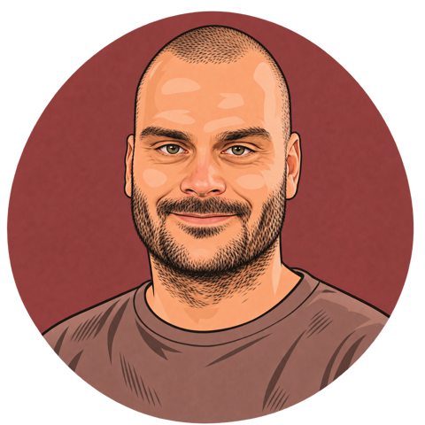
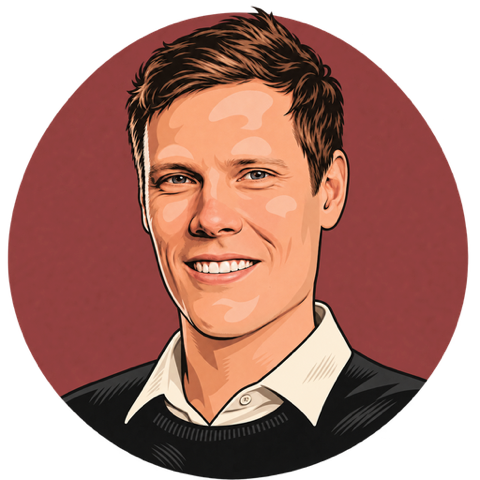
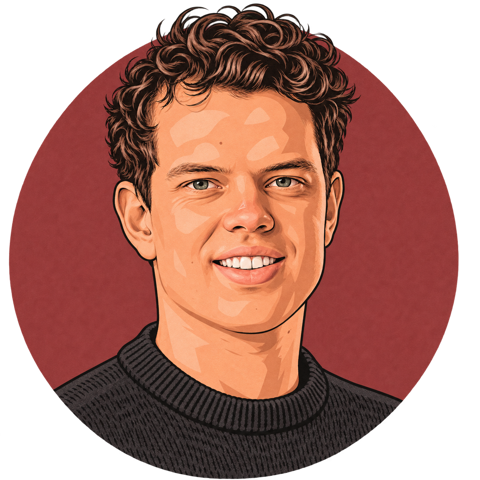
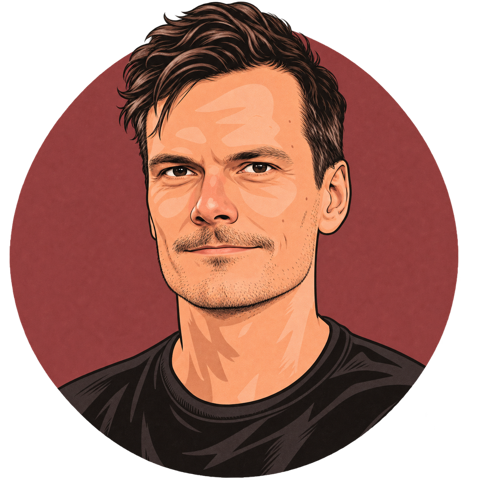
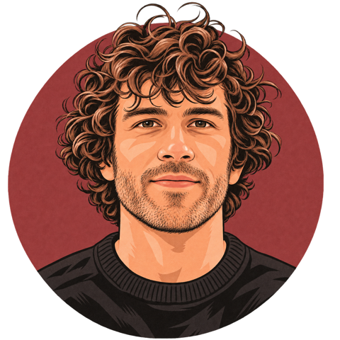

Bolette Sandford Pedersen
Professor
Portrait →

Kristoffer Laigaard Nielbo
Professor

Peter Schneider-Kamp
Professor
Portrait →
Torben Blach
Project Manager

Ali Basirat
Associate Professor

Desmond Elliott
Associate Professor

Kenneth Enevoldsen
Assistant Professor

Lukas Paul Achatius Galke Poech
Associate Professor

Simon Aagaard Enni
Assistant Professor

Anton Danholt Lautrup
Postdoctoral Researcher

Barbara Scalvini
Postdoctoral Researcher

Federico Torrielli
Postdoctoral Researcher

Mike Zhang
Postdoctoral Researcher

Nicolas Marc Simon Legrand
Senior Researcher

Yevhen Kostiuk
Postdoctoral Researcher

Zafar Hussain
Postdoctoral Researcher

Anders Falkenhard Røn
PhD Fellow

Andrea Blasi Núñez
PhD Fellow

Anna Bomme Ousager
Industrial PhD Fellow

Annemette Brok Pirchert
PhD Fellow

Danial Namazifard
PhD Fellow

Filippo Tonini
PhD Fellow

Gianluca Barmina
PhD Fellow

Jacob Nielsen
Industrial PhD Fellow

Mogens Henrik From
PhD Fellow

Márton Kardos
PhD Fellow

Nathalie Norman
PhD Fellow

Stine Lyngsø Beltoft
PhD Fellow

Andreas Nugaard Holm
AI Specialist

Per Andersen
Senior AI Specialist

Per Møldrup-Dalum
Chief Consultant, Data Management

Peter Bjerregaard Vahlstrup
Special Consultant, Web Development

Rasmus Larsen
Senior AI Specialist

Aleksandrs Baskakovs
Research Assistant
Anna Davidsen Buhl
Research Assistant

Gustav Idun Sloth
Student Data Scientist

Henrik Hoffmann
Guest Researcher
Johana Mayerova
Student Developer
Mikkel Krøjer Svendsen
Student Developer

Muhammad Rajabinasab
Research Assistant

Sylvain Pierre Estebe
Research Assistant
Vladimir Salnikov
Student Developer
Anders Holmgaard
Communications Advisor